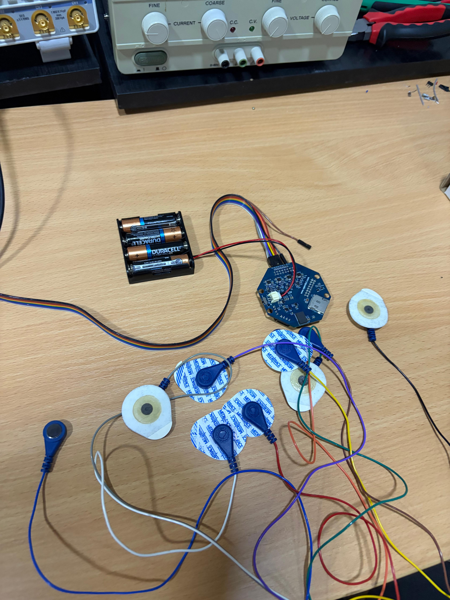
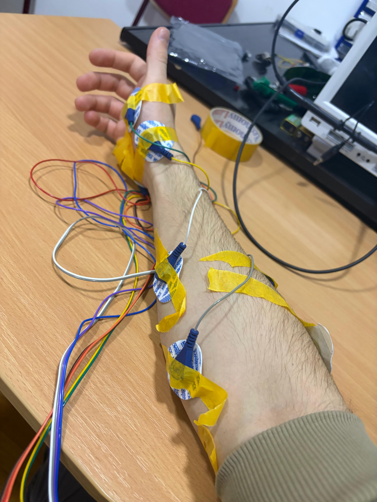
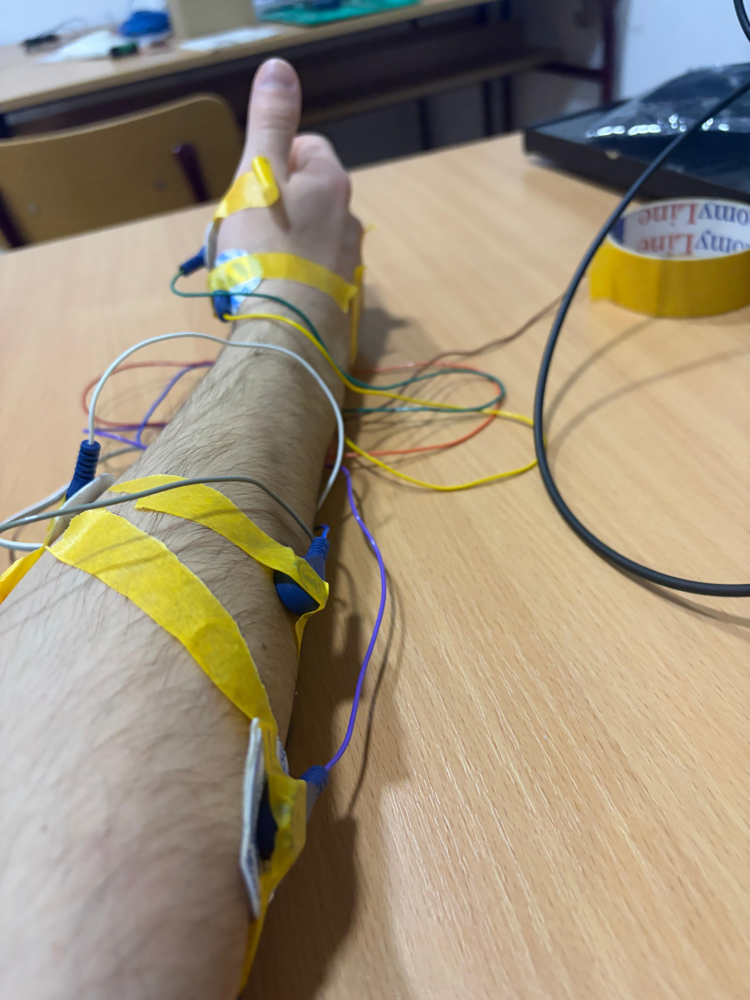
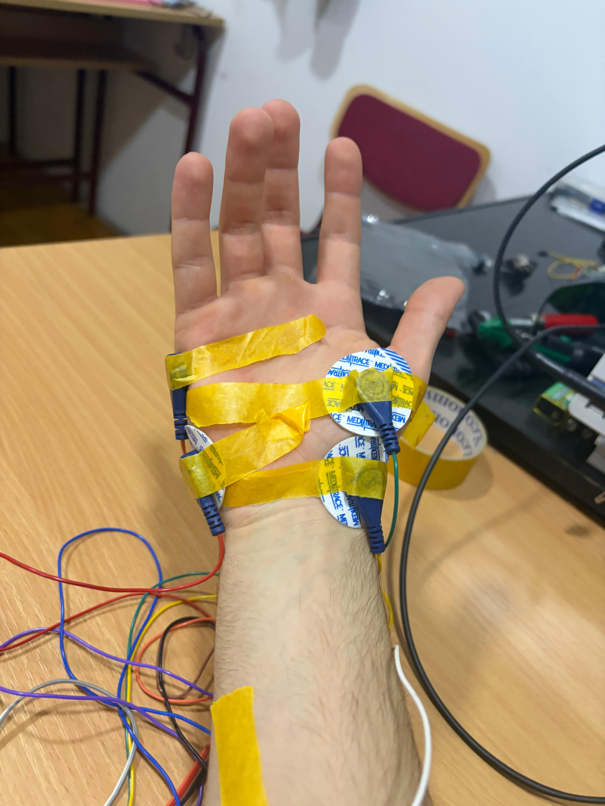

This project was developed during the course of “Introduction of Robotics” and was latter upgraded for
the purpose of graduation thesis.The goal of this project was to conclude if it was possible to make
functional robotic arm that is manipulated via EMG signals in real time. This thesis could latter prove
beneficial in developing similar systems that could be used for variety of purposes (Factories, Medicine, Education etc.).
Poppy Ergo JrPython 3.13OpenBCIRaspberry Pi 3 Model B v1.2BLELinux
Generating input (EMG): First step of realizing this project was making sure that valid input can be generated
using 1 hand. This was quite a challenge but after several tries I managed to extract 4 separate signals from 1 hand.
This signals are read and filtered through python script.
Defining movement: After finding the minimum and maximum value of generated signals, the median value was taken
as a limit for the robot to react. To achieve reaction robot has to receive at least 5 sequential instructions with value
above the limit. Same goes for returning to its base position. Because of disturbed input signals (mostly due to noise
that affected BCI board), I was unable to generate realistic movement of the hand, so the decision was to make only 5
positions that Ergo Jr could achieve
Running the script: To eliminate delay, BLE dongle from openBCI was connected directly into the Ergo Jr. The script
is reading signal data using scipy, brainflow and numpy libraries, and based on the input giving commands to the robotic
hand using pypoy library
Key Implementation Details
• The communication between Robotic Hand and OpenBCI operates directly to ensure data receive in real time
• Script consists of functions that are operating the Robotic Hand and Receiving EMG signals
• Scalable project, meaning there is a lot of space for improving the functionality of system
Challenges & Solutions
• Challenge: - Received signals from OpenBCI were disturbed by white noise and other factors
(power plugs, other devices in near the board).
• Solution: - I implemented several filters to negotiate noise such as: Notch Filter, Bandpass Filter and Smoothing
• Challenge: - Connecting the OpenBCI board directly to the robotic hand
• Solution: - Firstly, I installed BrainFlow v5.21.0 (default via pip), but it wasnt supported on Python 3.7 on the
Raspberry Pi. After uninstalling, I tried v5.1.0 and got a “wrong ELF class: ELFCLASS64” error, meaning the files were
incompatible with the OS. Although Raspberry Pi 3B has a 64-bit processor, Poppy Ergo Jr runs a 32-bit OS (Debian Buster),
so 64-bit binaries wont work. I then tested v4.6.0 but encountered the same issue. Trying to force 32-bit kernel mode
(arm_64bit=0 in /boot/config.txt) didnt help. The root problem is that PyPI doesnt provide a 32-bit ARM build of BrainFlow,
likely because 32-bit OS support was dropped. The Python script is 32-bit, while libBoardController.so is 64-bit, so
they are incompatible. The final solution was to download the BrainFlow C++ source, compile it directly on the Raspberry Pi,
and manually integrate it into the Python environment.
sudo apt-get install cmake build-essential git
cd ~/Desktop
git clone --branch 4.6.0 https://github.com/brainflow-dev/brainflow.git
cd brainflow
mkdir build
cd build
cmake ..
make -j2 (Using only 2/4 cores so raspberry doesn't run out of memmory)
cp ../compiled/*.so /home/poppy/pyenv/lib/python3.7/site-packages/brainflow/lib/
• Challenge: Raspberry Pi port getting occupied
• Solution: - This problem was resolved by killing the process using the port using this command:
sudo fuser -k /dev/ttyAMA0
Visuals & Schematics

OpenBCI Ganglion board with electrodes

Placement of electrodes on the hand
View 1

Placement of electrodes on the hand
View 2

Placement of electrodes on the hand
View 3
Representation of the system in action #1
In this video you can see how the system is working in real time. On the bottom of the screen you can see the values of
4 EMG signals, and on the top you can see the robotic hand. When the value of the signal is above the limit, the hand
is moving to its position, and when the value is below the limit, the hand is returning to its base position.
Representation of the system in action #2
Here is another video of the system in action, this time with me connecting the electrodes to my hand and controlling
the robotic hand in real time.
Impact
Although this project is still in its early stages, it has the potential to make a significant impact in the field of
assistive technologies and human-robot interaction. By demonstrating the feasibility of controlling a robotic arm using
EMG signals, this project opens up new possibilities for individuals with mobility impairments to regain functionality
and independence. Additionally, the insights gained from this project can contribute to the development of more advanced
EMG-based control systems, which could be applied in various domains such as rehabilitation, prosthetics, and even
entertainment.